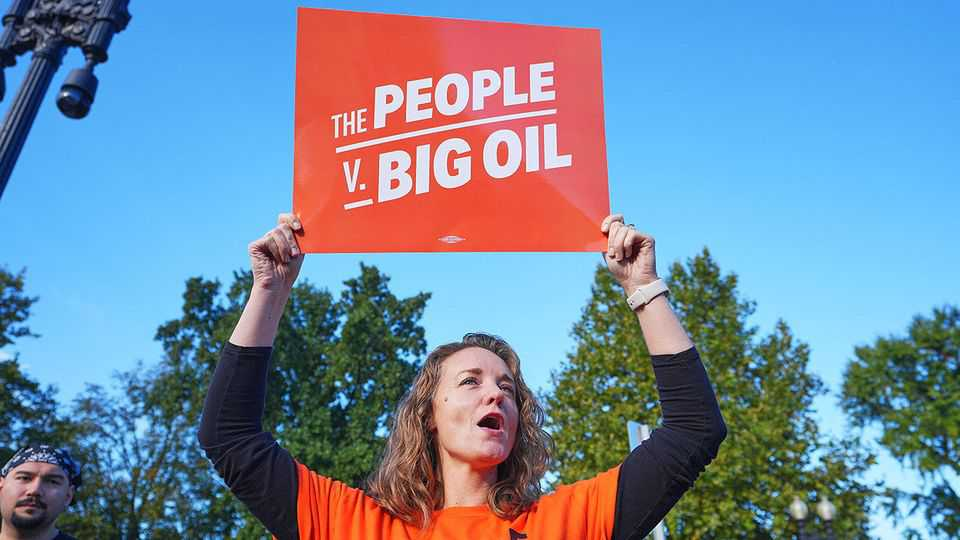

Big Tobacco’s lessons for Big Oil
A lawsuit over climate change reaches the Supreme Court

Oct 8th 2026
FOR DECADES after Americans discovered that cigarettes were killing them, tobacco companies won nearly every lawsuit that smokers brought. No one forced them to light up, the manufacturers said. Only after states uncovered evidence that firms knew of the risks posed by cigarettes—and hid them—did Big Tobacco capitulate, agreeing in 1998 to pay states more than $200bn over 25 years for the costs of treating smoking-related illness.
A generation on, the Supreme Court is poised to decide if a similar reckoning is coming for oil companies. Like tobacco firms, oil companies sell products with dangerous consequences—and they too understood the risks before the general public did. But unlike tobacco, oil is broadly useful, and legal obstacles stand in the way of winning damages from oil firms, as arguments before the Supreme Court on October 5th demonstrated.
In 2018 Boulder, Colorado, sued Exxon Mobil and Suncor Energy on the basis that emissions from their products contributed to floods, extreme heat and wildfires. A report commissioned by the city put the cost of coping with just some of the impacts of climate change at up to $157m by 2050.
The city alleges that the companies spent decades concealing the dangers of fossil fuels. A report commissioned in 1968 by the American Petroleum Institute (API), an industry group with links to Suncor’s predecessor company, warned that increased levels of carbon dioxide “may be the cause of serious worldwide environmental changes”. In the late 1970s scientists working for Exxon (a fellow member of the API) had found that burning fossil fuels could cause “dramatic environmental effects before the year 2050”.
The effect of continued obfuscation, Boulder alleges, was to limit action on climate. The city says its suit is intended to make firms pay for the costs of their deception, not to stop the sale of fossil fuels. The companies see it differently: their lawyer, Kannon Shanmugam, claims the litigation tries to “resolve major political issues in court” and warns of allowing Boulder to sue “me on a nuisance claim for refilling my car”. Colorado’s state supreme court ruled that Boulder’s case could proceed, a decision that the companies appealed.
Justice Samuel Alito, who owns shares in oil companies, recused himself from the case before the Supreme Court. Among the remaining justices, Boulder found some sympathy. During the oral argument, Justice Elena Kagan noted the case “appears to be based on the old 1990s tobacco suits”, with more recent opioid litigation following “the same model”. Big Oil lawsuits represented “chapter three”.
Mr Shanmugam countered that the suit was an “unprecedented” use of state law to shape global conduct. Owing to the “ambient nature of air and water”, he said, the Supreme Court has held that “federal law governs interstate pollution claims”. Justice Brett Kavanaugh seemed to agree, declaring that “this kind of pollution is a federal-law matter unless Congress speaks otherwise.” Justice Amy Coney Barrett carved out more room for state efforts but agreed that dealing with pollution is an “enclave” of federal common law.
The added difficulty, for Boulder and other cities, is that it is hard to establish a direct causal link between the obfuscation of fossil fuels’ harms and climate change. Many governments, fully informed of the risks, still choose not to act, valuing the benefits of using fossil fuels over the damage of climate change. Smoking can be characterised as a problem of individual choice; states got around that by suing for the public costs. Climate change is a problem of collective action, one that politicians—even when they know the harms—choose not to solve. ■
Stay on top of American politics with The US in brief, our daily newsletter with fast analysis of the most important political news, and Checks and Balance, a weekly note that examines the state of American democracy and the issues that matter to voters.